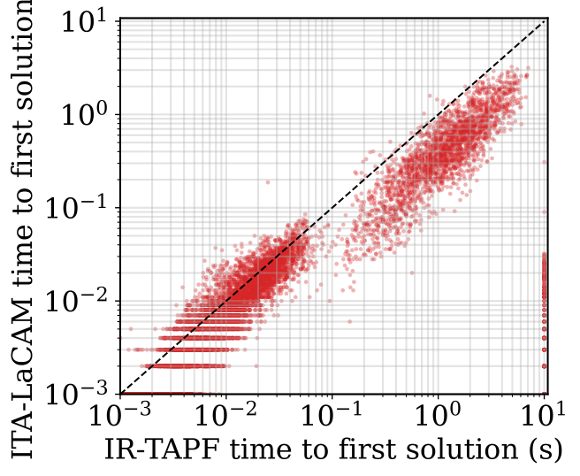
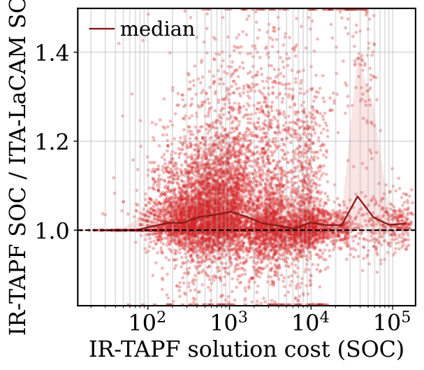
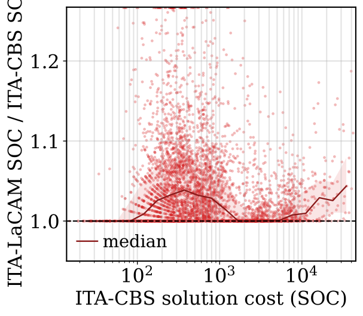

1University of Southern California · 2University of California, Irvine · 3Symbotic
Combined Target Assignment and Path Finding (TAPF) requires assigning targets to agents while simultaneously planning collision-free paths.
We present ITA-LaCAM, a complete and scalable TAPF solver inspired by LaCAM and ITA-CBS. In ITA-LaCAM, each joint-configuration node carries an agent-to-target matching. When a successor is generated, ITA-LaCAM incrementally repairs the matching for the agents that moved and uses the targets to guide PIBT successor generation. This design enables adaptive reassignment without explicitly enumerating the combinatorial assignment space, while preserving LaCAM’s completeness and scalability.
Across 9,760 benchmark instances on eight maps with 5–200 agents, ITA-LaCAM solved 100% of the instances, compared with 95.6% for IR-TAPF configured with DBS-Hungarian. ITA-LaCAM found an initial solution faster in 84.0% of the comparisons and achieved a lower sum of costs in 65.0% of the instances solved by both methods.
The same assignment-aware search that solves TAPF benchmarks also drives these construction simulations. Each round, the planner turns the current build state into a one-shot TAPF instance — carriers, ready bricks, scaffold removals — solves it, and executes the joint paths. Robots obey strict physics: moves are limited to |Δh| ≤ 1, a brick is laid only from an adjacent stand at the right height, floating bricks need side adhesion or hanging support, and every scaffold block is later stripped and returned to the depot. Drag to orbit, scroll to zoom.
BrickGPT-style brick lists (StableText2Brick voxel designs and a MOC instruction PDF) are assembled brick by brick by the robot crew, scaffold included and stripped. Total makespan T counts every simulation timestep from first pick to last scaffold return.
| Structure | Bricks placed | Scaffold blocks | Robots | Makespan T |
|---|---|---|---|---|
| Brick car | 104 | 10 | 16 | 792 |
| Brick piano | 320 | 161 | 16 | 3,624 |
| Victorian brougham (with brick-built horse) | 138 | 73 | 16 | 1,394 |
| Brick guitar | 325 | 268 | 16 | 5,382 |
| Brick chair | 1,116 | 996 | 16 | 7,526 |
Every tape passes an independent validator: unit moves with |Δh| ≤ 1, no vertex or edge collisions, placements stacked from legal stands, conservation of picks, placements, removals and deposits, and exact final-terrain match.
LaCAM* performs an A*-like search over joint configurations and uses Priority Inheritance with Backtracking (PIBT) to generate successors lazily, searching the full valid configuration graph without enumerating the joint action space. The key observation: feasible future transitions depend only on the current configuration, not on how it was reached — so extending LaCAM* from MAPF to TAPF only requires replacing fixed-target guidance with assignment-aware guidance.
Where CBS-TA and IR-TAPF fix an assignment and only get path feedback after a complete MAPF solve, ITA-LaCAM closes the assignment↔path-finding feedback loop at every search node.
Each high-level node stores a feasible minimum-distance agent-to-target matching computed with the Hungarian algorithm over collision-agnostic shortest-path distances. The matching supplies the temporary PIBT targets, the heuristic, and an assignment-dependent search cost.
When a successor configuration is generated, only the rows of agents that moved change. ITA-LaCAM reuses the parent’s matching and Hungarian dual variables and repairs those rows, updating the assignment online without solving it from scratch at every node.
Successor generation uses PIBT with priority inheritance, plus a swap rule for narrow-corridor livelocks: when two agents must pass, the candidate order is reversed and the blocker takes the vacated cell, creating a legal multi-step rearrangement.
The assignment guides but never permanently prunes: every valid successor stays reachable through lazy expansion, preserving LaCAM*’s completeness. After the first feasible solution, the search continues within the budget and keeps its best incumbent.
9,760 test cases. Eight maps. A 10-second limit.
ITA-LaCAM solved every case.

Across 9,760 test cases, ITA-LaCAM found a first solution sooner than IR-TAPF in 84.0%. IR-TAPF timed out on 425 cases; ours solved all of them.
Below the diagonal = faster with ITA-LaCAM.

Of 9,335 cases solved by both methods, ITA-LaCAM achieved lower total arrival time (SOC) in 65.0% versus IR-TAPF. SOC counts both movement and waiting.
Above 1 = lower cost with ITA-LaCAM.

The median cost gap was 1.6% on the 4,955 cases solved by both ITA-LaCAM and optimal ITA-CBS. 90% were within 10.2% of optimal.
Closer to 1 = closer to optimal. Paired cases only.
Figures 4–6 from the paper. Click any plot to enlarge. Original figures, CC BY-SA 4.0.
@article{tang2026italacam,
title = {ITA-LaCAM: A Complete and Scalable TAPF Solver
via Assignment-Aware Configuration-Space Search},
author = {Tang, Yimin and Zhang, Han and Chan, Shao-Hung and Kim, Junsoo
and B{\i}y{\i}k, Erdem and Koenig, Sven and Chen, Jingkai},
journal = {arXiv preprint arXiv:2609.14208},
year = {2026}
}